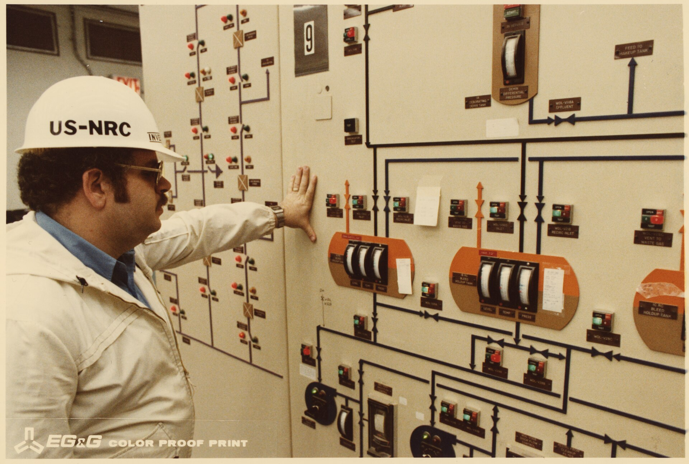
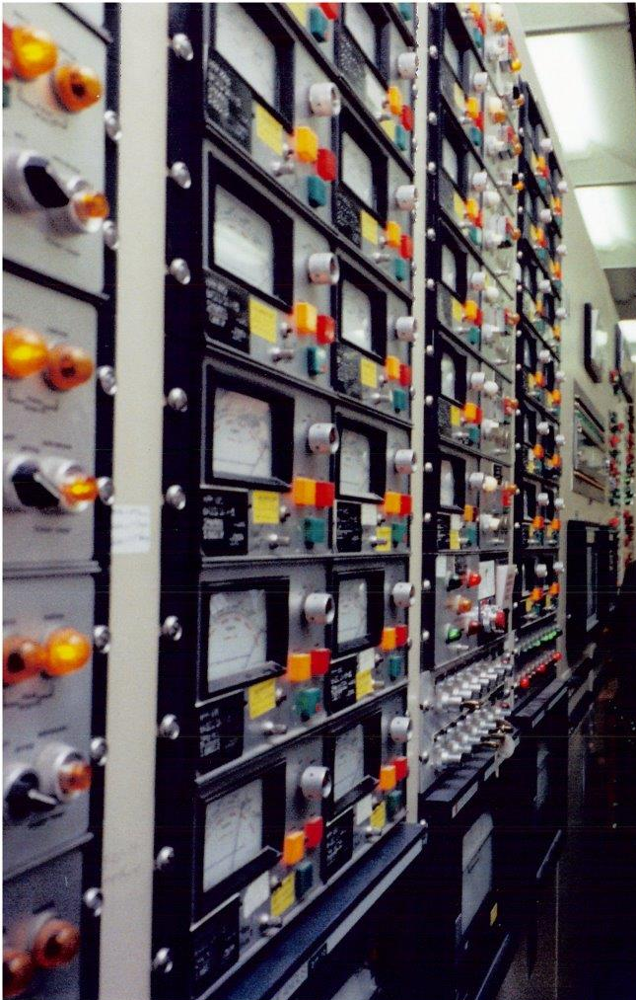

Three Mile Island TMI-2 Control Room
A room-scale annunciator wall whose one lamp reported the valve's command, not its position — and helped misdiagnose a meltdown

Overview
The Unit 2 control room at the Three Mile Island nuclear plant near Harrisburg, Pennsylvania, is a horseshoe of vertical instrument panels covered in hundreds of back-lit annunciator tiles, analog meters, and rotary selectors. On 28 March 1979 a frozen feedwater chain and a stuck-open pilot-operated relief valve (PORV) set off the worst commercial nuclear accident in U.S. history — and the accident was, in large part, an interface failure. Operators had no direct readout of the PORV's actual position; a single lamp labeled Light on — RC-RV2 open lit when the pilot solenoid was energized and went dark when power was cut, even though the valve itself had jammed open. The operators read the unlit lamp as "valve closed" and spent hours sending water into a primary loop that was draining out from underneath them. The room is preserved as an artifact because it concentrates, in one physical surface, every problem the museum cares about: identical-looking alarms that flood the operator, status displays that report command rather than reality, and a panel geometry that hid the one honest indicator — a downstream temperature gauge — behind the very panel it belonged to.
Deep dive
The TMI-2 console is a wall of square annunciator tiles arranged in a dense grid over an instrument board. Each tile combines a printed caption, colored lamp windows for alarm state, and a momentary pushbutton for acknowledge. The layout follows the plant rather than the operator's task: signals sit near the pipe or pump they belong to in the process diagram, so a fault that propagates across several systems lights tiles scattered across the wall. There is no hierarchy of severity beyond color, and color is used inconsistently — the same hue can mean "running normally" in one tile and "trip" in another. The interaction model is the classical annunciator cycle: a new alarm flashes and sounds a horn; the operator presses to acknowledge and the lamp goes steady; when the condition clears, the lamp extinguishes. That cycle assumes every lamp is an invariant map from plant state to light — an assumption TMI-2 broke.
The failure that made the room famous is semantic. The PORV indicator was wired to the solenoid circuit, not to a valve-position switch. When the valve stuck open and its control power was automatically cut, the light went out. Operators trained on a one-lamp "on means open" model concluded the valve was shut while roughly 120,000 liters of coolant escaped through it. The honest signal — a temperature sensor downstream of the valve reading far above normal — existed, but it sat on a non-safety-grade circuit and was mounted behind the seven-foot instrument panel, invisible from the operator station. The room thus teaches two lessons at once: never let a status display report a command instead of a state, and never bury a corroborating signal where the primary display cannot be checked against it.
In the opening minute the panel came alive with hundreds of simultaneous alarms, many technically true but uninformative. The pressurizer relief tank sump alarm, containment temperature and pressure, and radiation alarms all fired within minutes, but were indistinguishable in urgency from routine chatter on the same wall. This is the alarm-flood problem in canonical form: the panel's capacity to signal exceeded the operator's capacity to discriminate, and the design offered no ranking. The later trajectory of process-control HCI — first-out annunciators, prioritized alarm lists, the ISA-18.2 alarm-management standard — can be read as descendants of the lessons the TMI-2 panel failed to encode.
The lamp states the TMI-2 room used were part of an older, formalized vocabulary. Patent US4001797, "Annunciator system with direct field wiring" (filed 1975, issued 1977, for a solid-state annunciator with field terminal blocks), describes the same architecture: transducer inputs wired to solid-state logic whose outputs drive a visual display or buzzer. The operational grammar — flash to attract attention, acknowledge to silence the horn, steady while the fault persists, extinguish on clear, test lamp on demand — was a deliberate standard, and it is exactly the grammar that failed at TMI because the underlying signal was miswired to the command rather than the valve.
Most museum artifacts are single objects a person can hold or sit at. The TMI-2 console is a room-scale interaction surface — the largest "display" in the collection. Its value is not as hardware to preserve but as evidence: the photographs show operators at a wall of identical glowing tiles and meters, trying to infer a physical truth the panel was not designed to tell them. Put it beside the museum's keyboards, joysticks, and tactile exhibits and the contrast is sharp. Those are surfaces where a human directly commands a machine; this is a surface where a machine reports to a human under catastrophic time pressure, and where the reporting vocabulary itself failed.
The strongest image is a National Archives photograph (NARA 540034) of an NRC inspector looking at meters in the Unit 2 control room during the accident aftermath — public domain, full archival resolution. A second public-domain detail crop from President Carter's visit on 3 April 1979 shows the close-up panel geometry. Both are period images made inside the room during or days after the emergency.
Team & pioneers
- Metropolitan Edison Company (Met Ed). Operator of the Three Mile Island plant; responsible for the operator training and procedures the Kemeny Commission criticized.
- Babcock & Wilcox. Supplier of the pressurized-water reactor at TMI-2.
- U.S. Nuclear Regulatory Commission. Inspector pictured in the NARA photograph; commissioned post-accident reviews of control-room design.
Media

Sources
- Wikipedia — Three Mile Island accident (PORV indicator semantics, emergency feedwater block valves, sump alarm timing, alarm flood)
- Wikimedia Commons — File:Control room Number 2. Nuclear Regulatory Commission inspector looking at meters. - NARA - 540034.tif (public domain, NARA)
- Wikimedia Commons — File:Nuclear power plant control room panel detail, from- President Carter in the TMI-2 Control Room (cropped).jpg (public domain)
- John G. Kemeny et al., Report of the President's Commission on the Accident at Three Mile Island (1979) — control-room design and operator preparation
- U.S. Patent US4001797A, "Annunciator system with direct field wiring" (issued 1977) — solid-state annunciator architecture and display grammar